Os elementos de circuitos são produzidos com terminais de tamanho
padrão para facilitar a sua montagem. Uma forma de montar circuitos,
sem ser preciso soldar (figura à esquerda), é com uma placa de teste
(breadboard). Para construir circuitos mais duradouros, pode-se
usar uma placa de circuito (stripboard), que é uma placa de um
material isolador com furos e com pistas paralelas de cobre num dos
lados (figura à direita); o contacto entre diferentes componentes
consegue-se inserindo os terminais em furos que estejam na mesma
pista, tal como na placa de teste, mas soldando os terminais sobre o
cobre. Também se podem construir circuitos mais compactos, utilizando
placas de circuito
impresso (PCB). Uma PCB é semelhante a uma placa de circuito,
mas as pistas de cobre e os furos são desenhados por medida para cada
circuito específico.
5.1. Diagramas de circuito
Um circuito de corrente contínua, ou circuito C.C. (em
inglês, Direct Current, D.C.), é um circuito em que todas as
fontes de tensão têm força eletromotriz constante e todas as
resistências são constantes. Se no circuito forem ligados
condensadores, a corrente poderá variar em função do tempo (resposta
transitória do circuito), mas passado algum tempo a carga e tensão nos
condensadores atingem valores constantes.
Neste capítulo explica-se como calcular os valores iniciais e finais
de correntes e cargas e no capítulo sobre processamento de sinais
estuda-se a análise da resposta transitória dos circuitos de corrente
contínua. Para analisar circuitos é conveniente usar os diagramas
simplificados. Um exemplo de diagrama de circuito é a montagem usada
para carregar um condensador e a seguir observar como diminui a
diferença de potencial quando o condensador é descarregado através de
um voltímetro. O diagrama do circuito é apresentado na
figura 5.1. A pilha liga-se ao condensador durante algum
tempo, até este ficar carregado e é logo desligada. A ação de ligar e
desligar a pilha é representada no diagrama de circuito pelo
interruptor, que estará fechado enquanto o condensador é carregado.
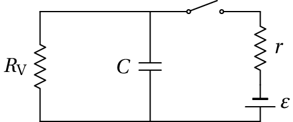
Figura 5.1: Carga e descarga de um condensador.
O voltímetro é representado no diagrama por meio da sua resistência
interna
. Geralmente, admite-se que o voltímetro não interfere
com o circuito, sendo representado apenas pelas setas com sinais
positivo e negativo, que indicam os pontos onde são ligados os
terminais positivo e negativo do voltímetro. Neste caso a resistência
do voltímetro é importante e, por isso, foi desenhada. Um voltímetro
ideal teria uma resistência infinita, que não permitiria que o
condensador descarregasse, permanecendo a sua diferença de potencial
constante. Num voltímetro real, a carga no condensador produz uma
corrente através do voltímetro, que faz diminuir a carga e,
consequentemente, a diferença de potencial.
5.2. Leis dos circuitos
A análise de um circuito consiste em calcular a corrente ou diferença
de potencial em cada resistência e a carga ou diferença de potencial
em cada condensador. Com essas grandezas pode-se também determinar a
potência que está a ser dissipada nas resistências e a energia
armazenada nos condensadores. Para analisar os circuitos é conveniente
usar duas regras gerais chamadas leis
de Kirchhoff.
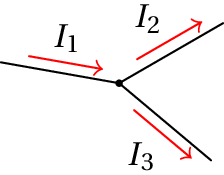
Figura 5.2: Lei das correntes.
A primeira lei, a lei dos nós ou lei das
correntes, estabelece que em qualquer ponto de um circuito onde há
separação da corrente (nó), é igual a soma das correntes que
entram no ponto e a soma das correntes que dele saem. Por exemplo, no
nó representado na figura 5.2, há uma corrente
a
entrar no nó, e duas correntes
e
a sair. A lei das
correntes implica:
(5.1)
Esta lei é válida sempre que as correntes
são estacionárias; nomeadamente, quando a densidade da nuvem de cargas
de condução permanece constante dentro do condutor, sem que haja
acumulação de cargas em nenhum ponto; nesse caso, toda a carga que
entra por um condutor, por unidade de tempo, deverá sair por outros
condutores.
A segunda lei designada lei das malhas,
ou lei das tensões, estabelece que a soma das diferenças de potencial,
em qualquer percurso fechado (malha)
num circuito, é sempre nula.
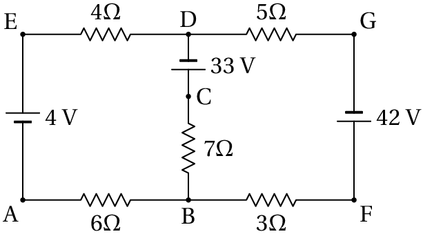
Figura 5.3: Circuito com duas malhas.
Por exemplo, o circuito na figura 5.3 tem três malhas:
ABCDEA, BFGDCB e ABFGDEA. A lei das malhas associa uma equação a cada
malha. A equação da malha ABCDEA é:
(5.2)
Na equação anterior,
denota o potencial em B, em
relação ao potencial em A, ou seja, a voltagem
. A equação anterior corrobora-se
facilmente tendo em conta essa notação.
5.3. Método das malhas
Nos circuitos com várias resistências estudados no
capítulo 3 foi sempre possível substituir as
resistências por uma resistência equivalente e calcular a corrente
fornecida pela fonte bem como todas as correntes nas resistências.
Nos casos em que há várias fontes ou quando não é possível associar
resistências (ou condensadores) em série e em paralelo até obter uma
única resistência (ou condensador) equivalente, é útil usar o
método das malhas. Por exemplo, no circuito da
figura 5.4 nenhuma das resistências está em série ou em
paralelo com qualquer outra. Como tal, não é possível usar o método do
capítulo 3.
Figura 5.4: Circuito com resistências que não estão nem em série nem em paralelo.
Usaremos o circuito da figura 5.4para mostrar o fundamento
do método das malhas. Na resolução de problemas não não é necessário
fazer uma análise como a que segue, pois basta aplicar as regras
enunciadas no fim da secção, para obter a matriz do circuito.
Como se mostra na figura 5.5, começa-se por identificar as 3
malhas do circuito e a cada malha atribui-se uma das 3
correntes de malha
,
e
. Note-se que na figura 5.5, as malhas estão
desenhadas com forma retangular, mas são equivalentes à malhas do
circuito na figura 5.4. É conveniente escolher o mesmo
sentido de rotação para todas as correntes de malha; no caso da
figura 5.5, escolheu-se o sentido horário.
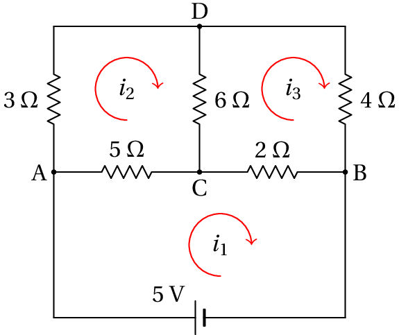
Figura 5.5: Correntes de malha no circuito da figura 5.4.
Nos dispositivos que pertencem apenas a uma malha, a corrente é igual
à corrente dessa malha. Por exemplo, na figura 5.5, a
corrente na resistência de 3~
é igual a
. Nos
dispositivos situados entre duas malhas vizinhas, a corrente é a soma
algébrica das correntes nessas duas malhas. Por exemplo, a corrente
que na resistência de 5
é
, do ponto A para o C (ou,
de forma equivalente,
de C para o A).
Com este método a regra dos nós é garantida em cada nó, e basta
aplicar a regra das malhas a cada uma das três malhas para obter 3
equações com as 3 correntes de malha. As diferenças de potencial entre
os vários pontos do circuito da figura 5.5, em função das
correntes de malha, são as seguintes (unidades SI):
(5.3)
substituindo esses valores, as três equações das malhas são:
(5.4)
Agrupando os termos que dependem de cada uma das correntes, pode-se
escrever o sistema na forma matricial:
(5.5)
O sistema matricial 5.5 foi obtido calculando
primeiro as diferenças de potencial nas secções do circuito e
aplicando a regra das malhas. No entanto, é possível escrever esse
sistema imediatamente olhando para o circuito
(figura 5.5) e usando as seguintes regras:
Cada linha da matriz do circuito corresponde a uma das malhas.
Na linha
, o número na coluna
será positivo e igual à soma de
todas as resistências que houver na malha
.
O número na linha
e coluna
(com
diferente de
) será
negativo e com valor absoluto igual à soma de todas as resistências que
existirem no segmento de circuito que demarca a fronteira entre as malhas
e
.
Cada linha
na matriz com uma coluna no lado direito da equação
5.5 é igual à soma algébrica de todas as f.e.m. que houver na
malha
. Nessa soma algébrica, são consideradas positivas todas as
fontes em que o sentido arbitrado para a corrente passe do elétrodo
negativo para o positivo (aumento de potencial) e negativas todas as
fontes em que o sentido arbitrado para a corrente passe do elétrodo
positivo para o negativo (diminuição de potencial).
A matriz do circuito é sempre simétrica, com os elementos na diagonal
positivos e todos os restantes elementos negativos. No
exemplo 5.1 as regras acima enunciadas são usadas para
escrever diretamente o sistema matricial de equações do circuito.
As 3 correntes de malha são a solução do sistema 5.5, que
pode ser obtida por qualquer dos métodos de resolução de sistemas de
equações lineares, por exemplo, a regra de
Cramer:
(5.6)
(5.7)
(5.8)
Neste caso, todas as correntes obtidas são positivas, o que indica que
o sentido das correntes de malha coincide com os sentidos arbitrados
na figura 5.5. A corrente que passa pela fonte é então
mA; a corrente na resistência de 3
é
mA e a corrente na resistência de 4
é
mA (ver figura 5.5. Na resistência de 5
, entre as malhas 1 e 2, a corrente é
mA,
para a direita, que é o sentido de
, porque
é maior que
. Na resistência de 2
a corrente é
mA, para
a direita, e na resistência de 6
a corrente é
mA,
para baixo porque
.
Exemplo 5.1
No circuito representado no diagrama, calcule: (a) A
intensidade e sentido da corrente na resistência de 5.6 kΩ.
(b) A diferença de potencial na resistência de 3.3 kΩ.
(c) A potência fornecida ou dissipada por cada uma das fontes.
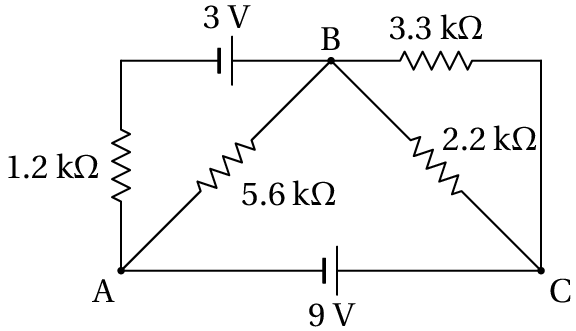
Resolução. Começa-se por escolher um sistema consistente de
unidades, para poder trabalhar com números, sem ter que escrever
unidades em cada equação. Exprimindo os valores das resistências em
kΩ e a diferença de potencial em V, os valores das correntes
aparecem em mA.
O circuito tem 3 malhas; no entanto, pode-se reduzir o número de
malhas para 2, pois as resistências de 2.2 kΩ e 3.3 kΩ
estão em paralelo e podem ser substituídas por uma única resistência:
2.2 || 3.3 = (2.2×3.3)/(2.2 + 3.3) = 1.32.
O circuito equivalente obtido, com duas correntes de malha, é:
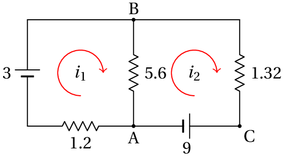
Figura 5.6: Circuito equivalente para o exemplo 5.1.
O sistema matricial correspondente a esse circuito é:
e os sinais negativos das duas correntes indicam que são no sentido
oposto ao sentido que foi arbitrado no diagrama. (a) Na
resistência de 5.6 kΩ passa a corrente de malha 1.888, no
sentido de A para B, e a corrente de malha 2.829, no sentido de B para
A. Consequentemente, a corrente nessa resistência é 2.829
mA, de B para A. (b) A corrente na resistência
de 1.32 kΩ é igual à segunda corrente de malha, 2.829 mA, de C
para B. Como tal, a diferença de potencial entre C e B, que é também a
diferença de potencial na resistência de 3.3 kΩ, é
1.32×2.829=3.73 V (maior potencial em C do que em
B). (c) A corrente que passa pela fonte de 3 V é igual á
primeira corrente de malha, 1.888 mA; como essa corrente passa do
elétrodo positivo para o negativo, a fonte de 3 V dissipa uma potência
de 1.888×3=5.664 mW. Na fonte de 9 V, a corrente é igual à
segunda corrente de malha, 2.829 mA; como essa corrente passa do
elétrodo negativo para o positivo, a fonte fornece uma potência de
2.829×9=25.46 mW.
5.4. Princípio de sobreposição
No exemplo 5.1, se cada uma das correntes de malha
e
for separada em duas parcelas,
e
, a
equação matricial 5.9 pode ser escrita da forma seguinte:
(5.10)
E, se as correntes
,
,
e
forem soluções dos dois
sistemas:
(5.11)
ficará garantido que
e
são a solução da
equação 5.9. Estes dois sistemas de equações acima
correspondem a dois circuitos mais simples do que o circuito original
na figura 5.6, em cada um desses circuitos uma das fontes é
substituída por um fio com resistência nula. Esses dois novos
circuitos são tão simples, que podem ser resolvidos sem recorrer ao
método das malhas, como mostra o exemplo seguinte.
Exemplo 5.2
Resolva novamente o exemplo 5.1, usando o princípio de
sobreposição.
Resolução. Colocando a fonte de 9 V em curto-circuito na
figura 5.6, obtém-se o seguinte circuito:
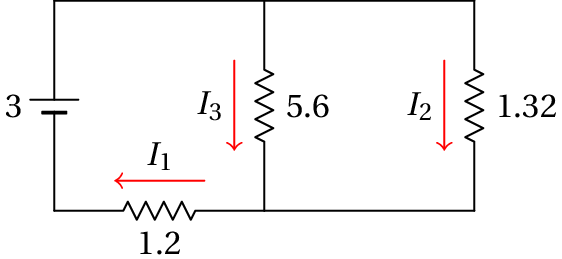
As correntes
,
e
são as correntes nas três
resistências, em unidades de mA. Note"-se que essas já são as
correntes reais e não correntes de malha. A resistência total entre os
terminais da fonte é:
Como tal, a corrente
é:
A diferença de potencial no conjunto em paralelo (5.6 || 1.32) é
e as outras duas correntes são:
Colocando a fonte de 3 V em curto-circuito na figura 5.6,
obtém-se o seguinte circuito:
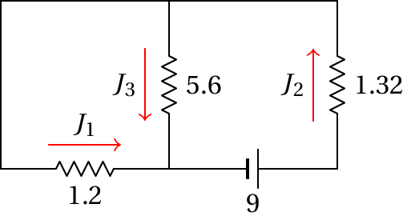
As correntes nas três resistências são agora
,
e
.
Note-se que as correntes
e
têm sentidos opostos aos
sentidos de
e
. A resistência total entre os terminais da
fonte é:
e, como tal, a corrente
é:
A diferença de potencial no conjunto em paralelo (1.2 || 5.6) é
e as outras duas correntes são:
Com estes resultados e olhando para os dois diagramas de circuito,
pode-se
calcular:
(para a direita)
(para cima)
(para baixo),
que são os mesmos resultados obtidos usando o método das malhas. O
resto da resolução é segue os mesmos passos já feitos quando as
correntes foram calculadas pelo método das malhas.
5.5. Circuitos com condensadores
A diferença de potencial num condensador é diretamente proporcional à
carga armazenada nas suas armaduras. Se ligarmos um condensador,
inicialmente sem carga, entre dois pontos de um circuito, a sua
diferença de potencial inicial é nula; é como se, nesse instante,
fosse feito um curto-circuito entre os dois pontos com um fio de
resistência nula. Nos instantes seguintes a diferença de potencial
aumenta, à medida que entra carga no condensador; como a diferença de
potencial no condensador não pode aumentar indefinidamente, a carga e
a tensão atingirão valores finais constantes.
Quando a carga e a tensão no condensador alcançarem os seus valores
finais, a corrente no condensador é nula e o condensador pode então
ser considerado como um interruptor aberto que não deixa passar
corrente. O aumento da carga até ao valor final, no período em que a
corrente diminui do valor inicial até zero, constitui a
resposta transitória à alteração produzida pela ligação da fonte.
A resposta transitória será estudada no capítulo sobre processamento
de sinais. No presente capítulo consideram-se apenas os valores
iniciais e finais das grandezas elétricas nos circuitos de corrente
contínua. Todos os condensadores no circuito podem ser substituídos
por fios com resistência nula, no instante inicial
e por
interruptores abertos para calcular os valores finais. O tempo
necessário para as cargas atingirem os valores finais é habitualmente
muito curto.
Exemplo 5.3
Um condensador de 1.2 µF, inicialmente descarregado, liga-se a uma
pilha com f.e.m. de 9 V e resistência interna de 230 Ω e usa-se
um voltímetro com resistência interna de 3.2 kΩ para medir a
voltagem no condensador. (a) Determine as correntes inicial e
final na pilha. (b) Determine o valor da carga final do
condensador.
Resolução. A ligação do condensador à pilha pode ser
representada por um interruptor que está inicialmente aberto. O
voltímetro deve ser ligado em paralelo ao condensador e, assim sendo,
representa-se por uma resistência de 3.2 kΩ em paralelo com o
condensador. O diagrama do circuito é então
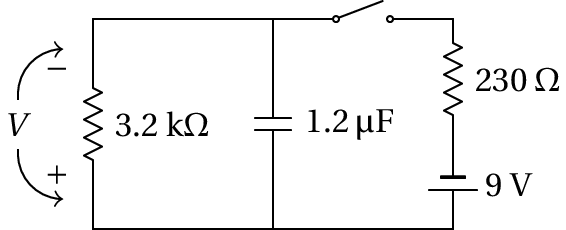
(a) No instante inicial, quando se fecha o interruptor, a
voltagem do condensador e nula, porque está descarregado, sendo
equivalente a um fio com resistência nula; o diagrama equivalente é os
seguinte
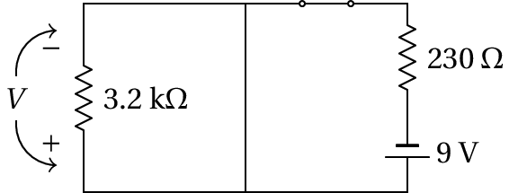
Note-se que toda a corrente que sai da fonte passa por esse fio e
nenhuma corrente passa pelo voltímetro, porque a resistência do fio é
nula. Outra forma de explicar este resultado é que como a resistência
do fio é nula, a diferença de potencial nele também é nula e como está
em paralelo com o voltímetro, a voltagem do voltímetro é nula (está em
curto-circuito); a corrente no volimetro é
e como
é nula, a corrente no voltímetro também é nula. A corrente
no instante inicial é então igual a (unidades SI)
(%i2) I0: float(9/230);
(%o2) 0.03913
Quando o condensador fica completamente carregado, é então equivalente
a um interruptor aberto e o circuito equivalente é:
e a corrente final é igual a
(%i3) I: float(9/(3200 + 230));
(%o3) 0.002624
(b) Como o condensador está ligado em paralelo com o
voltímetro, a diferença de potencial final entre as suas armaduras é
igual à diferença de potencial final na resistência de 3.2 Ω,
que é:
(%i4) DV: 3200*I;
(%o4) 8.397
e a carga final do condensador é igual a
(%i5) Q: 1.2e-6*DV;
(%o5) 1.008×10−5
ou seja,
µC. Note-se que os resultados dos comandos do
Maxima mostram apenas 4 algarismos significativos, mas internamente
está a ser usada uma precisão maior nos cálculos e nos valores
armazenados nas variáveis.
Exemplo 5.4
No circuito do exemplo 5.1, se a resistência de 5.6 kΩ
for substituída por um condensador de 1.8 µF, qual a carga final desse
condensador e qual a sua polaridade?
Resolução. O diagrama do circuito é:
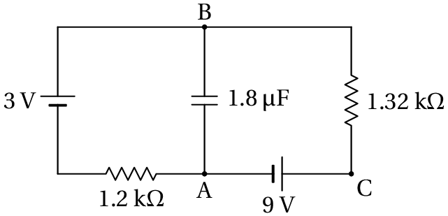
Quando a carga alcança o valor final, o condensador atua como
interruptor aberto e o circuito equivalente é:
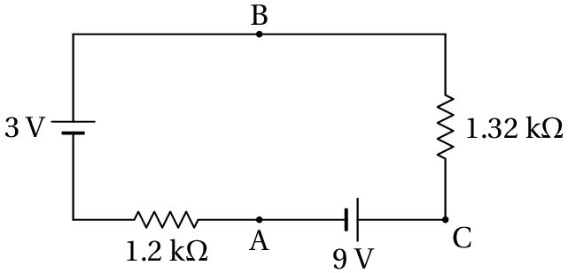
Como tal, o circuito também é equivalente a uma fonte única de 6~V, no
mesmo sentido da fonte de 9~, ligada a uma resistência de
2.52~kΩ. A corrente é então no sentido anti-horário e com
intensidade igual a
Essa corrente permite calcular a diferença de potencial no condensador
(igual à diferença de potencial entre os pontos A e B) e a carga:
A carga final do condensador é então 10.543 µC e a polaridade é
positiva na armadura ligada ao ponto B e negativa na armadura ligada
ao ponto A (o cálculo de DV com o comando %i7
foi feito admitindo um potencial de B maior do que o potencial de A).
Exemplo 5.5
No circuito representado no diagrama, determine a potência dissipada
em cada resistência e a energia armazenada em cada condensador, no
estado estacionário.
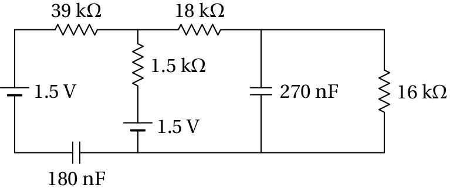
Resolução. Quando o circuito estiver no estado estacionário,
os condensadores comportam-se como interruptores abertos e o circuito
equivalente é o seguinte
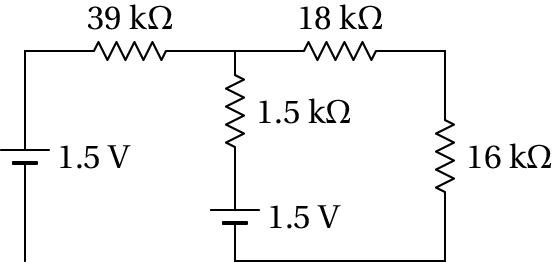
Na resistência de 39 kΩ a corrente é nula (não tem por onde
circular) e o circuito tem apenas uma malha, com resistência total 1.5
+ 18 + 16 = 35.5 kΩ e corrente igual a
(%i9) I: 1.5/35.5e3;
(%o9) 4.225×10−5
A partir dessa corrente calculam-se a seguir todas as potências
dissipadas nas resistências e as energias armazenadas nos
condensadores.
Na resistência de 39 kΩ,
, já que a corrente é nula.
Na resistência de 18 kΩ,
(%i10) P18: 18e3*I^2;
(%o10) 3.214×10−5
µW
Na resistência de 16 kΩ,
(%i11) P16: 16e3*I^2;
(%o11) 2.857×10−5
µW
Na resistência de 1.5 kΩ,
(%i12) P1_5: 1.5e3*I^2;
(%o12) 2.678×10−5
µW
No condensador de 270 nF, a diferença de potencial é a mesma que
na resistência de 16 kΩ:
No condensador de 180 nF, um possível percurso entre os dois pontos
onde está ligado passa pela fonte do lado esquerdo, pela resistência
de 39 kΩ (com diferença de potencial nula), pela resistência de
1.5 kΩ e pela segunda fonte. Como tal,
Qual dos seguintes princípios físicos está relacionado com a lei dos
nós?
Conservação da energia.
Quantização da carga.
Conservação da carga.
Conservação da quantidade de movimento.
Ação e reação.
Num condensador dentro de um circuito de corrente contínua, qual das
seguintes grandezas tem sempre um valor final nulo?
A carga.
A diferença de potencial.
A corrente.
A capacidade.
A energia armazenada.
Uma fonte de voltagem constante foi ligada a um condensador e 3
resistências, como mostra o diagrama. Qual a intensidade da corrente
final fornecida pela fonte?
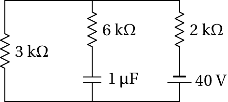
5 mA
8 mA
10 mA
20 mA
0
Se
,
e
são os valores absolutos das correntes que
circulam pelas resistências
,
e
no circuito da
figura, qual das equações é correta?
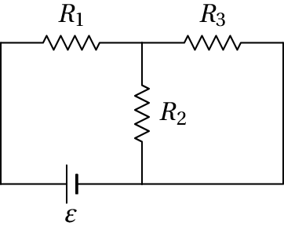
Qual das afirmações seguintes, sobre o potencial nos pontos A, B e C,
é correta?
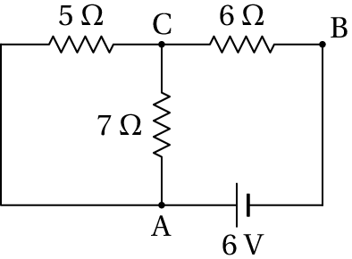
Problemas
No circuito da figura, determine quais das fontes de força
eletromotriz fornecem ou absorvem energia e calcule a potência
fornecida, ou absorvida, por cada uma.
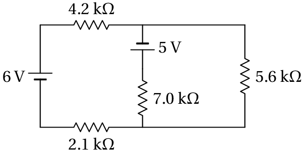
Duas pilhas com a mesma força eletromotriz de 9 V, têm resistências
internas diferentes, porque uma delas está mais gasta. A pilha mais
gasta tem resistência interna de 30 Ω, e a menos gasta tem
resistência interna de 20 Ω. As duas pilhas ligam-se em paralelo
a uma resistência de 2.7 kΩ, como mostra o diagrama. (a)
Qual das duas pilhas fornece maior potência ao circuito? (b)
Calcule a corrente na resistência de 2.7 kΩ.
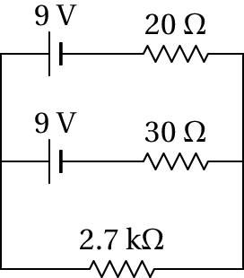
Se as duas pilhas do problema anterior fossem ligadas em série, e não
em paralelo, qual delas forneceria maior potência no circuito? Que
inconveniente poderá existir do ponto de vista prático?
Determine a potência dissipada em cada resistência no circuito e a
potência fornecida pela f.e.m. Verifique que a potência fornecida pela
f.e.m. é igual à soma das potências dissipadas em todas as
resistências.
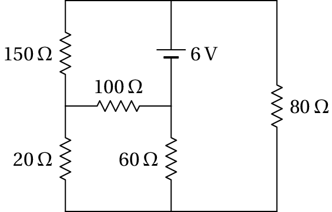
No circuito representado no diagrama, os dois condensadores estão
inicialmente descarregados. Determine: (a) As correntes
iniciais nas resistências e condensadores. (b) As cargas finais
nos condensadores, indicando as suas polaridades.
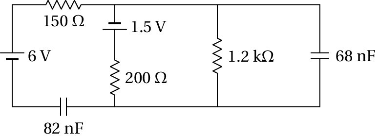
(a) Determine a intensidade e sentido da corrente no
condensador, no instante inicial em que está descarregado. (b)
Determine a carga final do condensador, indicando a sua polaridade.
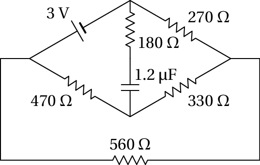
No problema 4, se a resistência de 100 Ω for
substituída por um condensador de 39 nF, qual a energia final
armazenada nesse condensador?
Respostas
Perguntas:1. C. 2. C. 3. B.
4. C. 5. D.
Problemas
As duas fontes fornecem potência; a f.e.m. de 6 V fornece 5.24 mW, e a
f.e.m. de 5 V fornece 3.93 mW.
(a) A que tem resistência interna de 20 Ω. (b) 3.32 mA.
A que tem resistência interna menor (20 Ω). O inconveniente é que pode
dar-se o caso em que a pilha mais gasta não fornece energia mas
dissipa, na sua resistência interna, parte da energia fornecida pela
outra pilha.
Na resistência de 20 Ω, 45 µW. Na resistência de 100 Ω,
62.0 mW. Na resistência de 150 Ω, 82.1 mW. Na resistência de
60 Ω, 105.8 mW. Na resistência de 80 Ω, 151.4 mW.
A f.e.m. fornece 401.4 mW.
Usando subíndices iguais ao valor da resistência ou capacidade,
(a)
,
mA,
mA,
mA. (b)
,
mA,
nC (positiva na armadura de baixo e negativa na de
cima),
nC (positiva na armadura da direita e negativa
na da esquerda).
(a) 4.78 mA, de baixo para cima. (b) 2.44 µC (negativa
na armadura de cima e positiva na de baixo).
236.5 nJ.
Pergunta 1, resposta A: Errada
As cargas que chegam a um nó têm que passar por algum dos
possíveis percursos ligados a esse nó; isso não tem nada a
ver com as energias das cargas.
(clique para continuar)
Pergunta 1, resposta B: Errada
As cargas que chegam a um nó têm que passar por algum dos possíveis
percursos ligados a esse nó; isso não tem nada a ver com as energias
das cargas.
(clique para continuar)
Pergunta 1, resposta C: Certa
As cargas que chegam a um nó tem que passar por algum dos possíveis
percursos ligados a esse nó; a conservação da carga implica que a
carga total que sai do nó é igual à carga total que chega a esse nó.
(clique para continuar)
Pergunta 1, resposta D: Errada
As cargas que chegam a um nó têm que passar por algum dos possíveis
percursos ligados a esse nó; isso não tem nada a ver com as energias
das cargas.
(clique para continuar)
Pergunta 1, resposta E: Errada
As cargas que chegam a um nó têm que passar por algum dos possíveis
percursos ligados a esse nó; isso não tem nada a ver com as energias
das cargas.
(clique para continuar)
Pergunta 2, resposta A: Errada
No estado estacionário o condensador pode ficar carregado com carga
diferente de zero.
(clique para continuar)
Pergunta 2, resposta B: Errada
No estado estacionário o condensador pode ficar carregado com carga
diferente de zero e, consequentemente, com diferença de potencial
diferente de zero.
(clique para continuar)
Pergunta 2, resposta C: Certa
No estado estacionário a carga no condensador já não se altera, o que
implica corrente nula.
(clique para continuar)
Pergunta 2, resposta D: Errada
A capacidade de um condensador é uma constante independente do tempo.
(clique para continuar)
Pergunta 2, resposta E: Errada
No estado estacionário o condensador pode ficar carregado com carga
diferente de zero e, consequentemente, com energia diferente de zero.
(clique para continuar)
Pergunta 3, resposta A: Errada
No estado estacionário a resistência de 6 kΩ não interessa, porque o
condensador comporta-se como circuito aberto que não deixa passar
nenhuma corrente por essa resistência.
(clique para continuar)
Pergunta 3, resposta B: Certa
No estado estacionário toda a corrente passa unicamente pelas
resistências de 3 kΩ e 2 kΩ, em série.
(clique para continuar)
Pergunta 3, resposta C: Errada
No estado estacionário a resistência de 6 kΩ não interessa, porque o
condensador comporta-se como circuito aberto que não deixa passar
nenhuma corrente por essa resistência.
(clique para continuar)
Pergunta 3, resposta D: Errada
No estado estacionário há corrente através das resistências de 3 kΩ e
2 kΩ.
(clique para continuar)
Pergunta 3, resposta E: Errada
No estado estacionário há corrente através das resistências de 3 kΩ e
2 kΩ.
(clique para continuar)
Pergunta 4, resposta A: Errada
O sentido da corrente
é de cima para baixo (do ponto com maior
potencial para o ponto com menor potencial).
(clique para continuar)
Pergunta 4, resposta B: Errada
O sentido da corrente
é de esquerda para direita (do ponto com
maior potencial para o ponto com menor potencial).
(clique para continuar)
Pergunta 4, resposta C: Certa
(clique para continuar)
Pergunta 4, resposta D: Errada
Essa equação implica então que
é nula, que não é certo.
(clique para continuar)
Pergunta 4, resposta E: Errada
Essa equação implica então que
é nula, que não é certo.
(clique para continuar)
Pergunta 5, resposta A: Errada
é 6 volt maior que
, devido à fonte.
(clique para continuar)
Pergunta 5, resposta B: Errada
é menor que
, porque a corrente circula
de A para C.
(clique para continuar)
Pergunta 5, resposta C: Errada
é menor que
, porque a corrente circula
de C para B.


As cargas que chegam a um nó têm que passar por algum dos possíveis percursos ligados a esse nó; isso não tem nada a ver com as energias das cargas.
(clique para continuar)